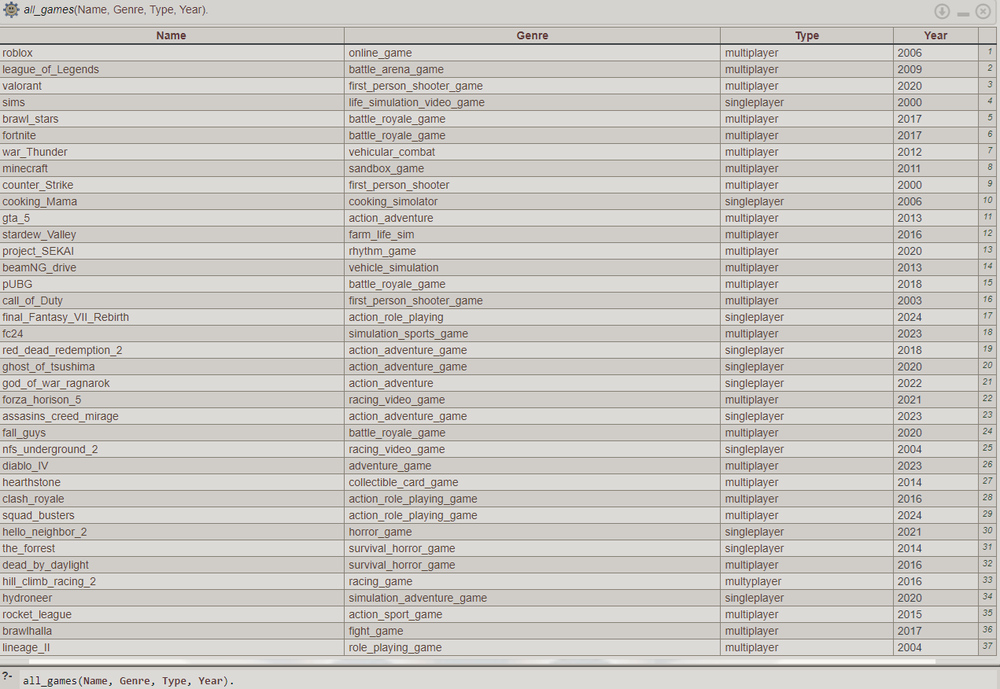

Тази Prolog програма е създадена да помага при различни задачи, свързани
с управление на играчи в една игра. Програмата съдържа следните
функционалности:
Примерна заявка за изброяване на видео игри

Примерна заявка за изброяване на всички видео игри тип сингълплейър